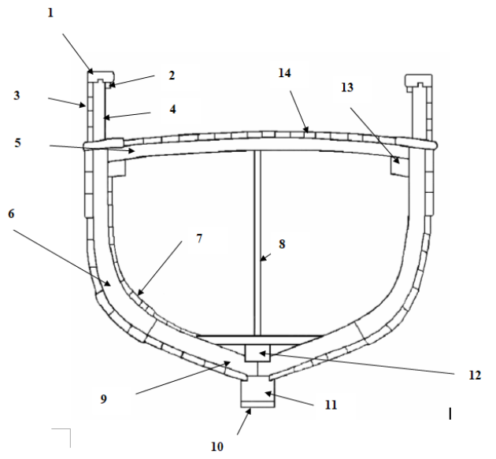

La charpente
En architecture marine, chaque pièce constituant le navire prend un nom.
Principaux éléments de charpente (vue longitudinale)
1. Étrave ; 2. Contre étrave ; 3. massif AV ou marsouin ; 4. Brion ; 5. Bande molle ; 6. Quille ; 7. Tube d'étambot ; 8. Massif arrière ; 9. Étambot ; 10. Allonge de voûte ; 11. Trou de jaumière ; 12. Courbe ; 13. Petit étambot ; 14. Tableau arrière; 15. Talon de quille ; 16. Crapaudine
Principaux éléments de charpente (vue transversale)

1. Lisse ; 2. Serre/contre lisse ; 3. bordé de pavois ; 4. jambette ; 5. Barrot ; 6. Membrure ; 7. Serre de bouchain ; 8. Épontille ; 9. Varangue ; 10. bande molle ; 11. Quille ; 12. Carlingue ; 13. Serre de bauquière ; 14. bordé de pont
Le pavois
1. bordé de pavois ; 2. Bordé de pont ; 3. serre de lisse ; 4. lisse de pavois ; 5. sabord de décharge ; 6. Jambette